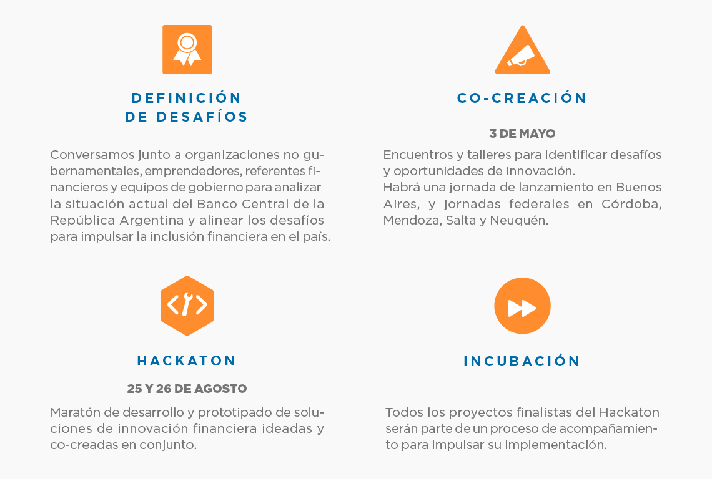

El Ministerio de Modernización junto al Banco Central de la República Argentina y con el apoyo del Ministerio de Desarrollo Social lanzan el Programa de Innovación Financiera 2017 orientado en el eje de Inclusión Financiera.
Esta nueva edición se basa en la colaboración e innovación tecnológica para desarrollar servicios financieros más accesibles y sostenibles, trabajando junto a emprendedores, empresas, organismos públicos y ciudadanos. Por eso nos enfocamos en ampliar las etapas. ¡Conocelas y participá!

¡Sé parte del Programa!
- Si estás interesado en participar como orador y/o mentor de alguna etapa del Programa, podés registrarte acá.
- Si estás interesado en que tu organización/proyecto/empresa participe de la feria de innovación, podés registrarte acá.
- Si tu organización/proyecto/empresa está en Córdoba, Mendoza, Salta o Neuquén y queres participar de las Jornadas Federales, podés registrarte acá.
Importante: La fecha límite para las postulaciones como orador o mentor, y para la Feria de Innovación, es el miércoles 19 de abril.
Conocé los proyectos del Hackaton 2016
Reviví el Hackaton 2016 en estas fotos
Contacto
Escribinos a innovacionpublica@modernizacion.gob.ar